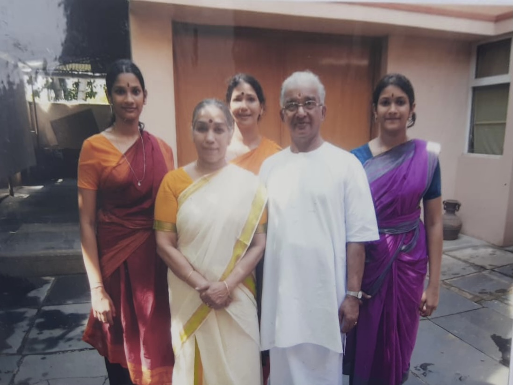

Nirmalanjali
Academy of Bharathanatyam
Home
Home

Nirmalanjali is a school dedicated exclusively to the teaching of Bharatanatyam, the most popular and widely practiced classical dance of Tamil Nadu, India, more than 2000 years old, rooted in Natya Sastra, the earliest treatise on dance and drama written by the sage and priest Bharata. At Nirmalanjali, we pride ourselves in training students of all ages to turn their passion into something greater, not just a professional dancer but their holistic development. This devotional art not only passes on our cultural values to students but also helps them with discipline and their social well-being.
Gurus
Gurus
Founder
Natyapoorna Dr. Nirmala John
Post Diploma (Bharatakalanjali, India)
B.F.A (Bharathidasan University, India)
M.F.A (Bharathidasan University, India)
P.H.D (Bharathidasan University, India)
ㅤ
Nirmala John is an accomplished teacher, choreographer and pioneer in the field of Bharatanatyam who has carved a golden niche in Sri Lanka and earned admiration internationally by her excellence and perfection in the art.
Her teaching of Bharatanatyam began with the award of the Post Diploma Certificate from Bharatakalanjali which she was privileged to receive from the hands of the great philosopher G.V. Iyer.
The dance academy ‘Nirmalanjali’ was inaugurated in 1986 and has grown far beyond its Silver Jubilee with a track record of many ‘Arangetrams’ and accomplishments.
Initially, she entrenched her fame by her solo performances in many countries the world over, like the states Illinois, New Haven, Florida, Yale and Connecticut in the USA, and cities like Kuala Lumpur in Malaysia, Oslo in Norway, Bangkok in Thailand and Mylapore, Bangalore Chidambaram in India and in Singapore.
She represented her country as the nominee of the State at the golden jubilee of the Diplomatic Relations between Norway and Sri Lanka in Norway and the 6th International Conference of Tamil Studies in Malaysia.
Among her outstanding honors are the Bunka Award of Japan and many titles including the prestigious ‘Natyapoorna’ of Bharatakalanjali, Chennai together with ‘Kalai Chudar’, ‘Natya Kala Jothi’, ‘Nadana Ilavarasi’, ‘Natya Kala Mani’ and ‘Kalai Chelvi’.
Although she is absolutely committed to maintaining Bharatanatyam with its traditional purity and aesthetic values, her pioneering ventures in blending it with diverse religions, literature, music and languages have gained much acclaim.
Principal
Dr. K. Rekhanjali John Sivaraj
Post Diploma (Kalai Kaviri School of Fine Arts, India)
ㅤ

K. Rekhanjali John Sivaraj, the eldest daughter of the Founder Nirmala John, who completed her graduation with the Arangetram in the presence of V.P. Dhananjayan in 2007, has proved no second to her mother in the mastery of the art.

While learning the art under her mother she not only took after her in gaining the admiration and appreciation of the audience by her excellent performances but also assisted her with utmost devotion and efficiency in training the students. She has performed solo in the USA and as the main dancer in a group both in the USA and India. She has also taken part in many programs of the academy both on stage and television.
Her being glorified with her sister who is also a spectacular dancer with the title ‘Anjali Sisters’ echoing the adage ‘Travencore Sisters’ redounds to her credit.
Academy
Academy
The founder, Nirmala nee Benedict, was energetic but very mischievous when a child. She exuded exceptional artistic talents at school, winning gold medals at two inter-school solo acting drama contests in the role of males by portraying epic characters, Mark Anthony and Doctor Faustus.
When it came to the choice of a career, she was faced with two alternatives, whether to pursue dance which was her penchant or become an accountant, and on the advice of her spiritual guide Very Rev. Fr. Manik Muthucumaru, she was led to join Bharatakalanjali of the Dhananjayans in Chennai.

At the completion of her studies, she sought to fulfil her dream of dancing to her heart’s content as well as sharing her talents with others, and so was born ‘Nirmalanjali, the academy of Bharatanatyam in Colombo in 1986. The name was given by her father who is a renowned scholar of languages and poet to connote dedication (‘Anjali’} to purity (‘Nirmalam’) which, in the broader sense absorbs not only purity in the art, the two religions Hinduism and Christianity, but also, incidentally, the name of the founder.

Nirmala is privileged to be assisted by her father who has composed most of her lyrics for the dances, and her late mother, a Manipuri Dancer, extremely proficient costume designer and seamstress, who continuously helped her in the green room.
Nirmalanjali has had a large number of ‘arangetrams’ and frequent performances both on stage and television. They performed with the teacher Nirmala at the 21st Annual Festival of Classical Dances at the Nadaraja Temple in Chidambaram. Nirmala often performs with her students in her dance productions. Some such major productions were ‘Navarasa Virunthu’, “Nithiya Sumangali’, ‘Sivakamiyin Sabatham’, ‘Paasathin Por’, ‘Doctor Faustus’, ‘Mathikkor Alaipu’, Tholuvam Sollum Kathai’, Vetrikkodi’, ‘Nadakkindrome’, ‘Thirukkudumbam’, ‘Sivasakthi’ and ‘Sri Rama Pattabishekam’.
Nirmala considers it a great privilege and blessing, merited through more than 3 decades of sincere commitment to the art, to have the golden opportunity of opening a branch in Brisbane, Australia with her talented daughter who has proved herself to be no second to any in the field.
The Program
ㅤ
We provide training in the environment of physical in-person classes, either one-to-one or in groups.
Virtual classes are conducted based on terms agreed upon and have been in demand in recent times.
The courses are directed towards the award of the Diploma at the end of the mandatory period of 5 years or earlier if the disciple is talented and diligent.
Courses are also programmed for the examinations of Kalai Kaviri College of Fine Arts, Tiruchirappalli in India and this academy both in Australia and in Sri Lanka.
Testimony
Testimony
The Arengetram of Rekhanjali John and her sister Kalanjali John
ㅤ
"It is praise-worthy that both the dancers had perfect co-ordination. Normally when two are performing the co-ordination is always lacking, but that never occurred in this Bharatanatya Arangetram. Both the sisters executed the Nirtha perfectly with thala and laya. They handled it with full emotional involvement and appropriate facial expressions. In the oral Nattuwanga Jathi Korvai and in the Swara Adavu Jathi Korvai both showed their exceptional talent in deft footwork, and they did not fail to show their exceptional talent in Nirthiya through their beautiful expressive facial expressions.
It was a remarkable Arangetram with perfect training."
Dr. Subashini Pathmanathan Ph.D
Daily News - February 06, 2008
A victory in dance production
ㅤ
Nirmalanjali school of Bharatanatyam marks 27th anniversary
ㅤ
"It was a new creation, without transgressing the traditions of Bharatanatyam, without transgressing the technique of dance and without transgressing the principles of Carnatic music. It has to be a choreographer who can coordinate dance, song, movement and drama with such admirable excellence."
Prof. Maunaguru
The Sunday Times Plus - October 13, 2013


Contact
Contact
Have any questions?

Nirmalanjali academy of dance, COLOMBO, SRI LANKA
Address: Emilda Lane, Colombo 4
Phone number: +94-777-896-858
Email: nirmalajohn11@gmail.com